A working hybrid smart-cart system — hardware, a Django web app, an Android companion app, and the ML pipeline behind it — pairing few-shot object detection with barcode scanning for fallback accuracy, and a RAG-powered chatbot on top. Documented in a full technical report, "Design and Development of Machine Learning Architecture for Smart Trolley."
Overview
Most smart-cart concepts treat item recognition as a pure computer-vision problem, which pushes them toward large labelled datasets, heavy hardware, and latency that doesn't hold up in real retail conditions. This project — built with co-authors Masood Jalal and Muhammad Talha at COMSATS University Islamabad, and documented in the technical report "Design and Development of Machine Learning Architecture for Smart Trolley" — takes a dual-detection approach instead: a ResNet18-based few-shot object detector as the primary path, with barcode scanning as a fallback, and a retrieval-augmented chatbot layered on top for accessibility and product questions.
The stated problems it targets are familiar to anyone who's looked at retail automation closely: heavy dependence on labelled datasets, computational bottlenecks on embedded hardware, poor adaptability to changing inventory, and limited accessibility for visually impaired shoppers. The system also frames its contribution against relevant UN Sustainable Development Goals — resilient infrastructure and innovation (Goal 9), inclusive technology (Goal 10), and responsible consumption through digital transformation (Goal 12).
System architecture
The system is organised into three layers: a sensing/input layer (webcam, barcode scanner, microphone), a processing layer (a Raspberry Pi 5 running PyTorch and OpenCV), and a user-interaction layer (a Django web app paired with the RAG chatbot).
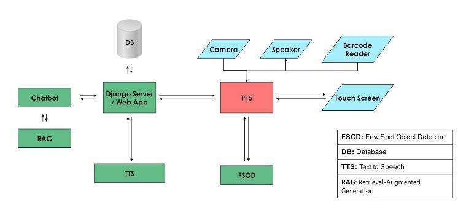
Few-shot object detection
The detection module uses a ResNet18 feature extractor on 224×224 inputs, running at roughly 58 ms per frame in the architecture spec. Rather than classifying every frame independently, it compares each detected object's embedding against stored reference embeddings by cosine similarity, then applies a temporal consistency check that requires five consistent detections within 1.5 seconds before accepting a match — filtering out one-off misreads before they reach the cart.
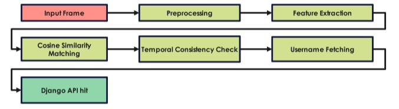
Once a match is confirmed, the pipeline pulls the session username from browser cookies and posts the verified identification to the Django backend, closing the loop between what the camera sees and what lands in the shopper's cart.
Barcode fallback
The barcode scanner communicates over USB HID, so raw keystroke events are captured from the input device, mapped to characters, and accumulated in a buffer until an Enter keystroke marks the end of a scan. The completed barcode is then paired with the session username — again read from the browser cookie — and posted to the Django backend as a JSON payload with an increment flag, so the cart quantity updates without needing to re-scan an item already in view.
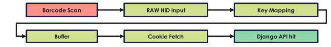
RAG chatbot
Product questions are handled by a retrieval-augmented chatbot: a query is first classified as general or product-related, product data is fetched (from cache, or a live /get_all_products call when the cache is stale) and turned into structured documents, then embedded with Ollama-based embeddings and stored in a ChromaDB vector database. At query time the system retrieves the top matches by cosine similarity, builds a prompt with LangChain's ChatPromptTemplate, and generates a response with an LLM (Gemma3:1b via Ollama), returned through a /ask REST endpoint alongside the relevant product metadata.
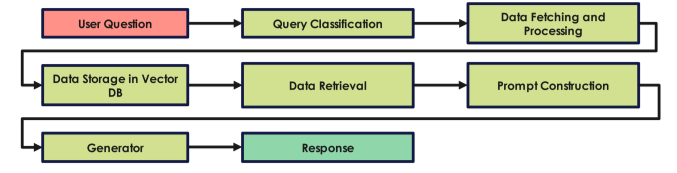
Vision only has to cover what a barcode can't resolve. That keeps the accuracy and compute budget of the FSOD path proportional to the actual gap it's filling, rather than trying to out-detect a barcode at its own job.
Tech stack
Backend runs on Django with the REST Framework; the web frontend is plain HTML/CSS/JavaScript; the Android companion app is written in Kotlin (7.1.1+); and the ML side leans on PyTorch, OpenCV, and FAISS, all running on a Raspberry Pi 5 with a webcam and touchscreen as the physical interface.
Interfaces
The client interface uses a QR-based login — inspired by the WhatsApp-for-Windows pairing flow — so a shopper can sign in without typing on a shared touchscreen. The home screen lists cart items alongside recommendations and the chatbot, and checkout shows a confirmation screen with a QR payment option.
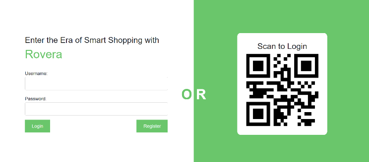
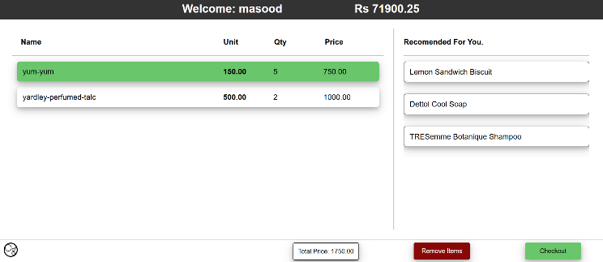
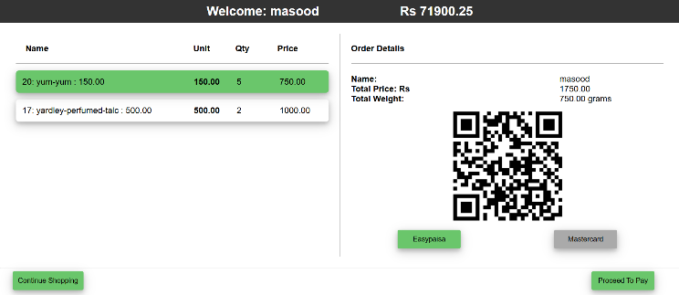
The admin interface gives store staff a live view of sessions, sales, and inventory — daily, monthly, and yearly breakdowns for both micro and macro-level reporting, plus the ability to add, edit, or remove products and set recommendations.
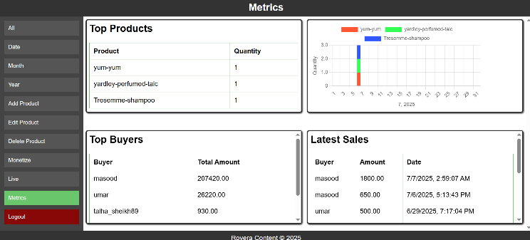
An Android companion app replaced an originally-planned NFC login, since it needed no extra hardware and most shoppers already carry a compatible phone. It scans the cart's QR code to sign in, then mirrors live cart data and shopping history back to the shopper's device.
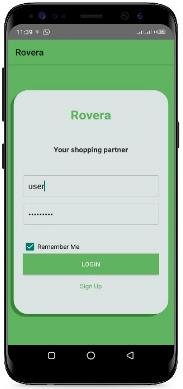
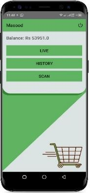
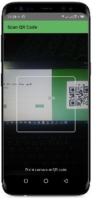
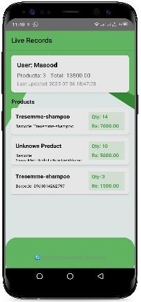
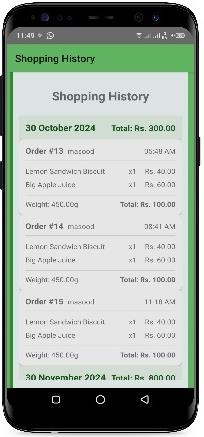
Experimental results
The FSOD model was evaluated against a five-item, 5–10-image-each reference set on a Raspberry Pi 5, and benchmarked against a YOLO11 baseline trained on hundreds of annotated images across the same five classes.
| Metric | FSOD (ResNet18) | YOLO11 baseline |
|---|---|---|
| Accuracy | 88.4% | 68.4% |
| Mean Average Precision (mAP) | 0.888 | 0.781 |
| AUC | 0.939 | 0.865 |
| Mean inference time | 108.5 ms | 187.4 ms |
| Average FPS | 9.2 | 5.3 |
The few-shot approach came out ahead of the YOLO11 baseline on every metric measured — accuracy, mAP, AUC, and speed — while needing only 5–10 reference images per item instead of a full annotated training set.
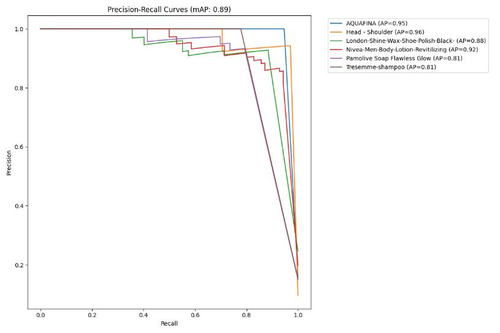
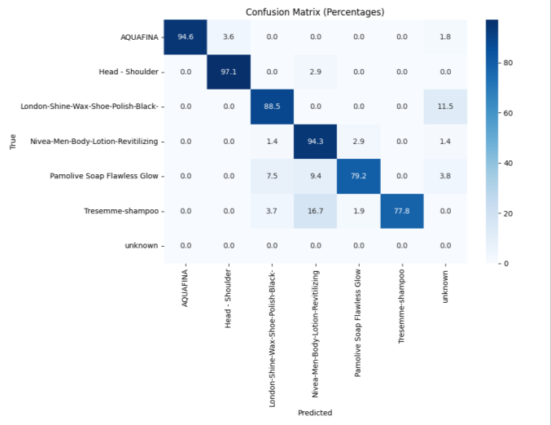
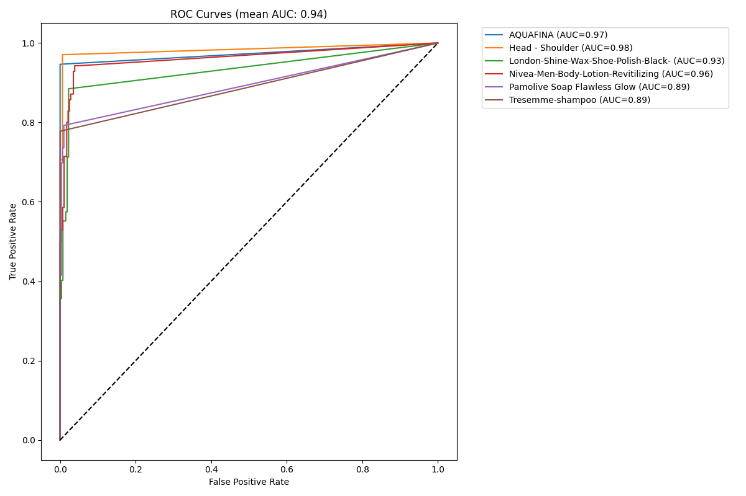
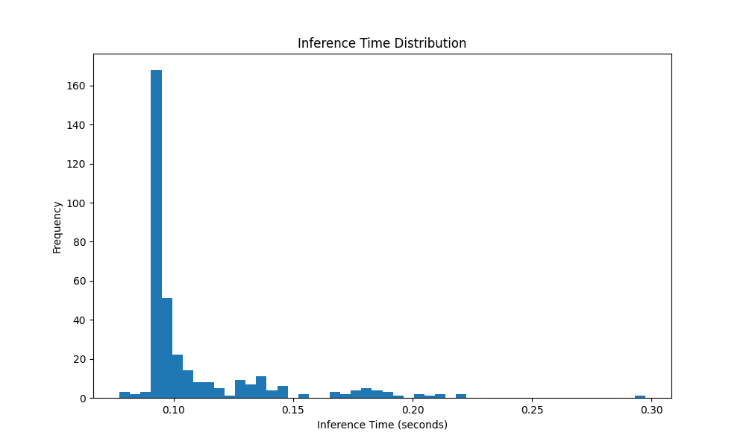
Discussion
The lightweight ResNet18 architecture stayed suitable for edge deployment, temporal filtering cut down false positives from single-frame misreads, and combining vision with barcode fallback made the whole system more robust than either method alone. The write-up is equally direct about the limits: a central region-of-interest misses items near the frame edges, there's no multi-item tracking yet, and barcode scanning is sensitive to glare and scanner glitches.
Outcome & future work
The finished prototype validated the core bet: a barcode-first, few-shot-assisted detection strategy can outperform a conventionally-trained YOLO baseline on a resource-constrained Pi 5, while needing a fraction of the training data. Planned next steps include object tracking for multi-item scenes, wider dataset coverage, real payment gateway integration, a voice assistant, camera-based "what is this?" product lookup, better battery design, more context-aware RAG responses, and local-accent-aware NLP.